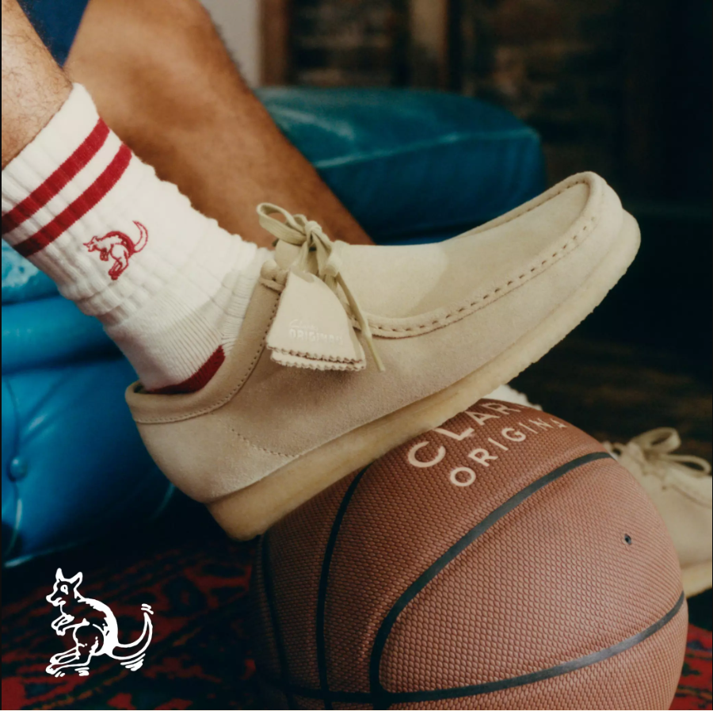
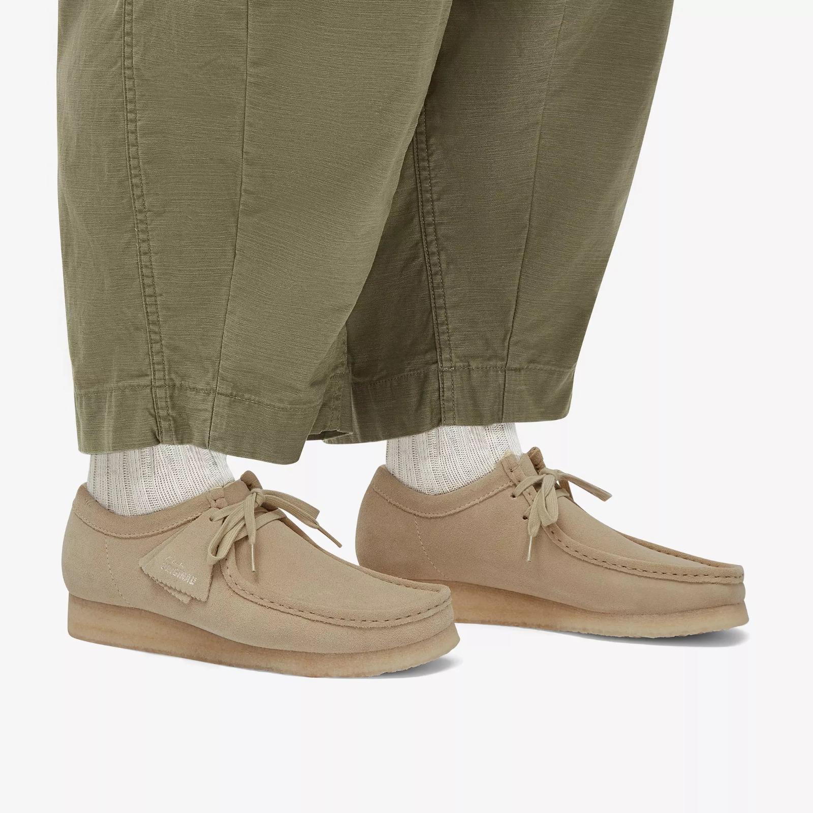
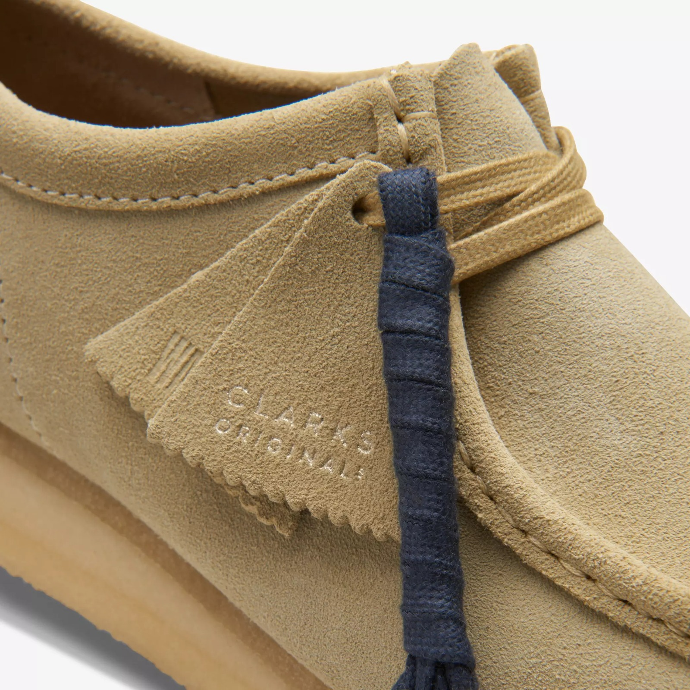
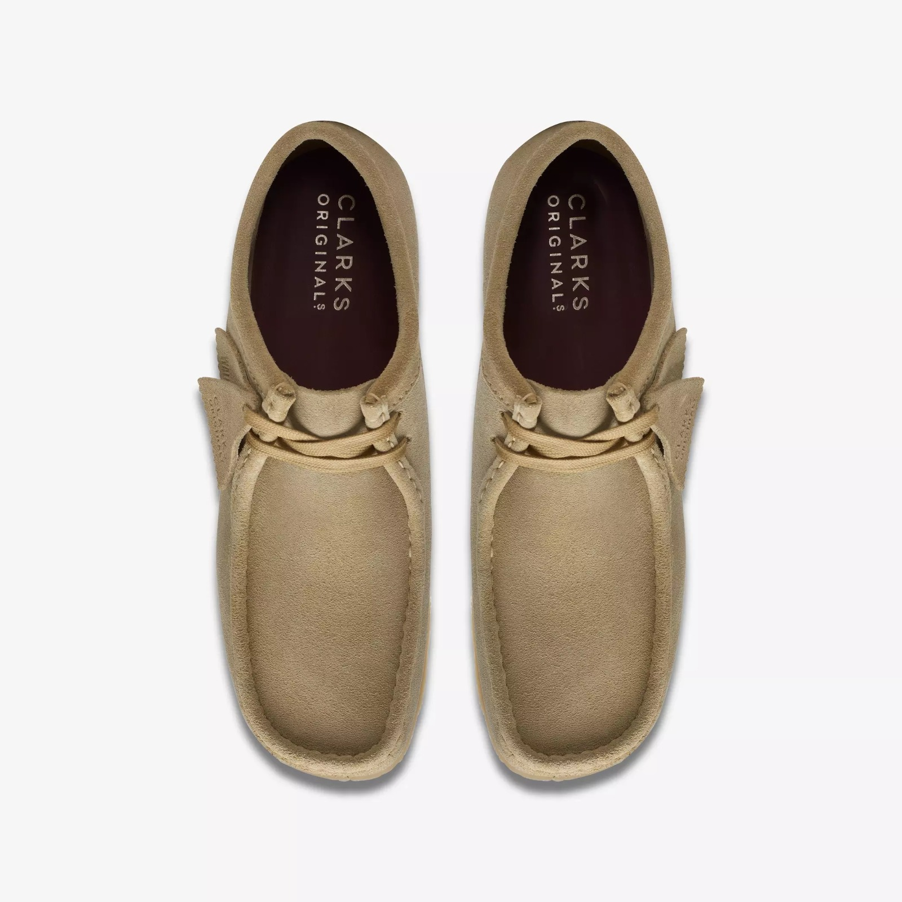
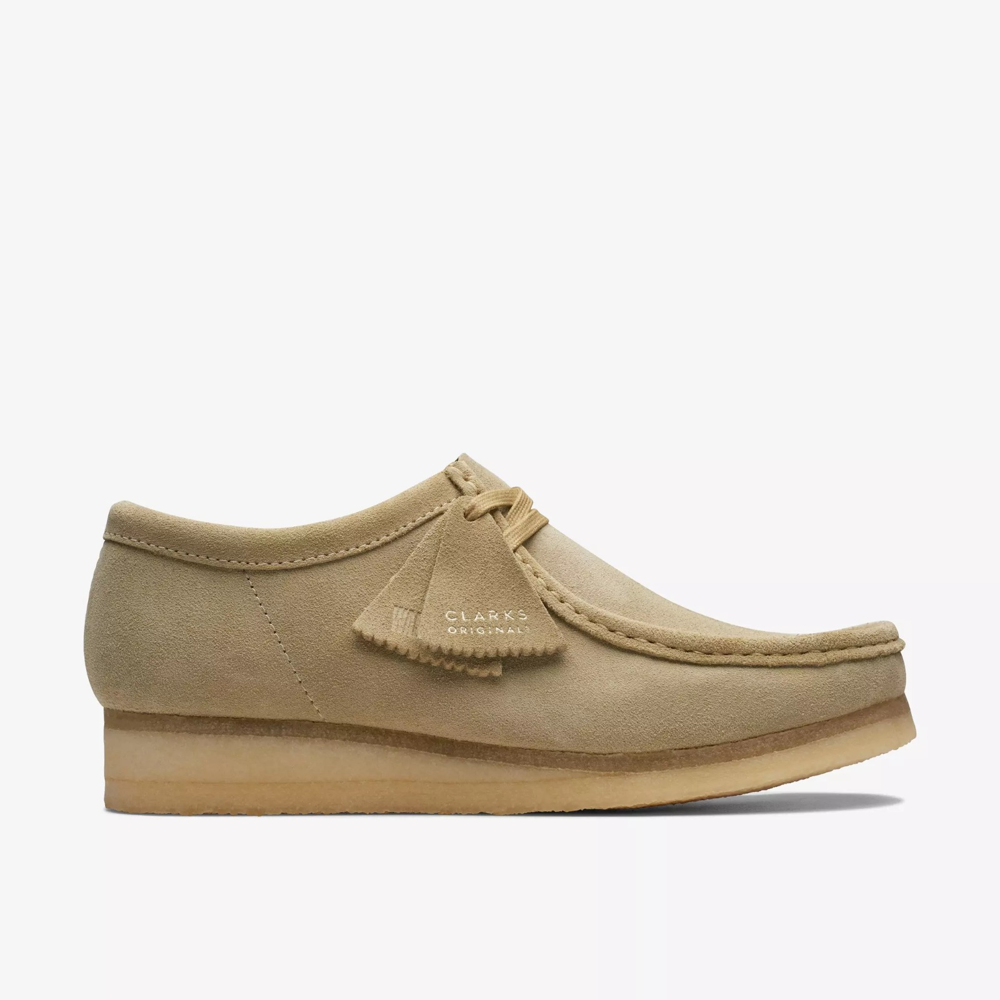
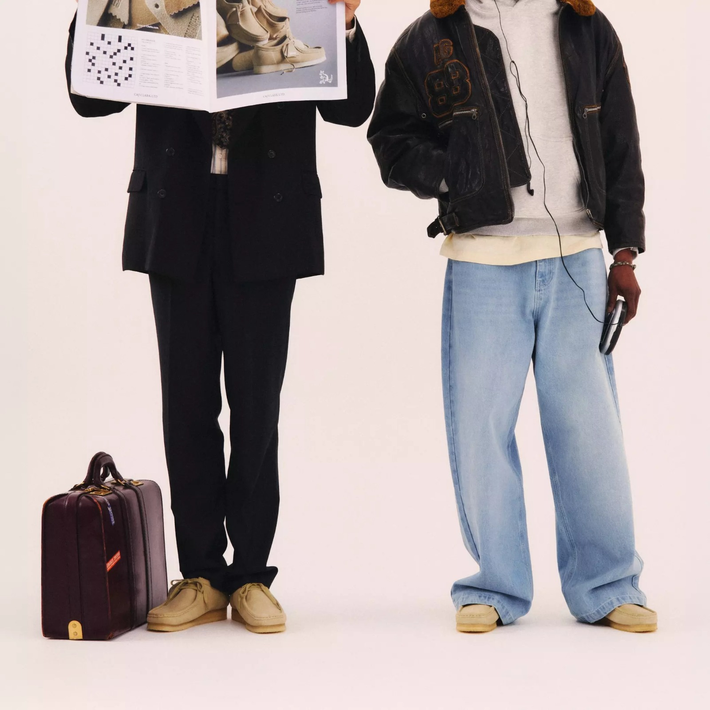
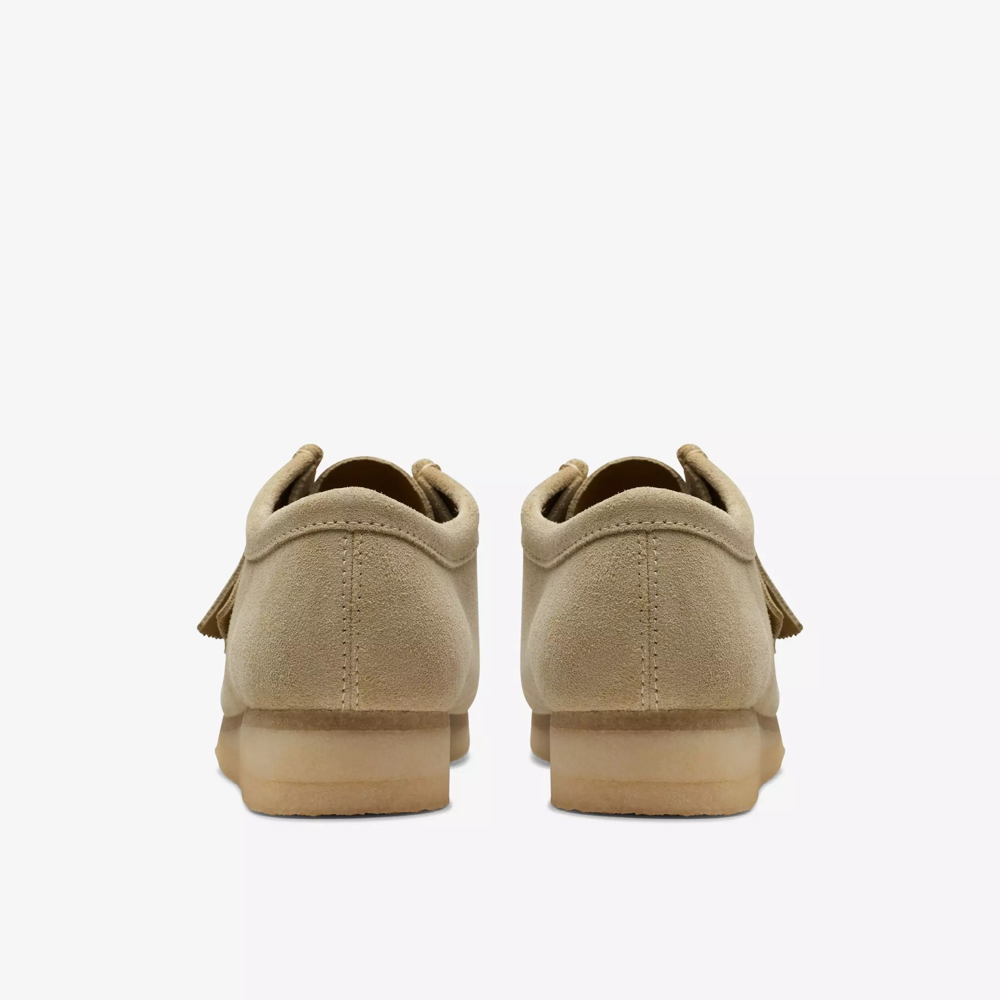

Behind Every Pair
Hover (or tap) a card to flip it and read the story behind the shoe.

Wallabee Tan Classic
Tan Classic
The original moc-toe silhouette in premium suede, worn the way it was meant to be: laced loose, soles scuffed.

Wallabee Maple Suede
Maple Suede
A warmer tan tone that pairs effortlessly with both tailored trousers and relaxed cotton.

Stitchwork Detail
Stitchwork Detail
Hand-stitched moc seams and the signature kiltie tag — the details that separate Originals from imitations.

Cola Coating
Cola Coating
Viewed from above: a deep, rich suede finish with the crepe sole peeking out at the edge.

Sage Tint Profile
Sage Tint Profile
The full side silhouette: low-slung crepe wedge sole and the classic two-eyelet lace.

Street Style
Street Style
From tailored suits to wide denim, the Wallabee silhouette moves between wardrobes without missing a step.

Heel & Sole
Heel & Sole
The crepe wedge sole, graduated in tone, built for all-day comfort with zero break-in period.

The Crimson Edition
The Crimson Edition
Our most requested colorway: full-grain crimson leather on the classic moc-toe boot last.